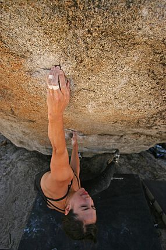

Bouldering is a form of free climbing that is performed on small rock formations or artificial rock walls without the use of ropes or harnesses. While bouldering can be done without any equipment, most climbers use climbing shoes to help secure footholds, chalk to keep their hands dry and to provide a firmer grip, and bouldering mats to prevent injuries from falls.
Unlike free solo climbing, which is also performed without ropes, bouldering problems (the sequence of moves that a climber performs to complete the climb) are usually less than six metres (20 ft) tall. Artificial climbing walls allow boulderers to climb indoors in areas without natural boulders. In addition, bouldering competitions take place in both indoor and outdoor settings.